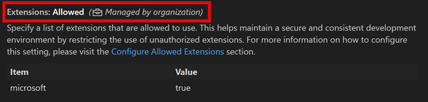

使用策略集中管理 VS Code 设置
Visual Studio Code 中的企业策略使组织能够为其开发团队集中管理 VS Code 设置，以确保整个组织的一致性和兼容性。当策略值被设置后，该值将覆盖在任何级别（默认、用户和工作区）配置的 VS Code 设置值。
IT 管理员可以通过不同的设备管理解决方案在用户设备上部署和强制执行特定的 VS Code 配置。VS Code 支持在 Windows、macOS 和 Linux 上应用策略。

在本文中，您将了解 VS Code 中提供了哪些企业策略，以及如何在不同的操作系统上配置它们。
Windows 组策略
VS Code 支持基于 Windows 注册表的组策略。
这些配置文件可以使用移动设备管理（MDM）解决方案进行部署，也可以在单台设备上手动安装。
步骤 1：获取示例 ADMX 和 ADML 文件
从 VS Code 1.69 版本开始，每个版本都附带一个 policies 目录，其中包含定义了可用策略的 ADMX 模板文件。
您可以从现有安装中获取 ADMX 和 ADML 文件，也可以通过下载和解压 VS Code zip 归档文件来获取。按照以下步骤获取文件：
- 下载适用于您的 VS Code 版本的 VS Code zip 归档文件。
- 将 zip 文件解压到一个临时位置。
- 导航到解压文件中的
policies文件夹。该文件夹包含 ADMX 模板文件（例如vscode.admx）以及一个包含不同语言 ADML 文件的locales子文件夹。步骤 2：配置策略值
根据您的需求编辑策略值：
字符串策略 - 接受文本值或 JSON 字符串的策略：
<!-- 示例：允许来自特定发布者的扩展 -->
<key>AllowedExtensions</key>
<string>{"microsoft": true, "github": true}</string>
<!-- 示例：将更新模式设置为特定值 -->
<key>UpdateMode</key>
<string>start</string>[!IMPORTANT]
如果策略值中存在语法错误，该设置将不会被应用。您可以在 VS Code 中查看窗口日志（按 kb(workbench.action.showCommands) 并输入 显示窗口日志）来检查错误。
布尔策略 - 接受 true/false 值的策略：
<!-- 示例：启用用户反馈 -->
<key>EnableFeedback</key>
<true/>
<!-- 示例：禁用遥测 -->
<key>EnableTelemetry</key>
<false/>移除不需要的策略 - 删除您不想强制执行的策略的 key 和 value：
<!-- 若不强制执行更新模式策略，请删除以下行： -->
<key>UpdateMode</key>
<string>start</string>请参阅下面的策略参考，了解每个策略的接受值和行为的详细信息。
步骤 3：部署策略
您现在可以使用设备管理解决方案将配置好的策略大规模部署到组织中的所有相关设备。在批量部署之前，您可以使用本地组策略编辑器在本地 Windows 计算机上手动测试策略。
可以使用诸如 Microsoft Intune 或 Active Directory 组策略等产品在整个组织中集中管理设备策略。这些解决方案允许管理员从中央位置将 ADMX/ADML 文件和策略配置部署到多台设备。
对于 Active Directory 环境，请将 ADMX 和 ADML 文件复制到中央存储，以使策略在整个域中可用。
如果您想在批量部署之前在本地 Windows 计算机上测试策略，可以手动安装 ADMX/ADML 文件并使用本地组策略编辑器配置策略。
按照以下步骤在本地 Windows 计算机上配置 VS Code 策略：
步骤 1：安装策略定义文件
- 将
vscode.admx文件复制到C:\Windows\PolicyDefinitions。 - 将适当的 ADML 文件从
locales子文件夹（例如en-US\vscode.adml）复制到C:\Windows\PolicyDefinitions\（例如C:\Windows\PolicyDefinitions\en-US）。[!NOTE]
您需要管理员权限才能将文件复制到
PolicyDefinitions目录。步骤 2：打开本地组策略编辑器
- 按
Windows+R打开运行对话框。 - 输入
gpedit.msc并按 Enter 打开本地组策略编辑器。 - 如果用户账户控制提示，请选择 是 以允许应用进行更改。
步骤 3：导航到 VS Code 策略
VS Code 策略在计算机配置和用户配置下均可用：
- 计算机配置 > 管理模板 > Microsoft VS Code
- 用户配置 > 管理模板 > Microsoft VS Code
[!TIP]
当同时配置了计算机级别和用户级别的策略时，计算机级别策略优先于用户级别策略。
步骤 4：配置策略
- 选择策略类别（计算机配置或用户配置）。
- 导航到 管理模板 > Microsoft VS Code。
- 双击要配置的策略（例如 更新模式）。
- 在策略设置对话框中，选择 已启用 以强制执行该策略。
- 使用可用选项或文本字段配置策略值。
- 选择 确定 保存更改。
- 关闭本地组策略编辑器。
该策略将在下次启动 VS Code 时生效。某些策略可能需要重新启动 Windows 才能生效。
macOS 配置描述文件
配置描述文件管理 macOS 设备上的设置。描述文件是一个 XML 文件（.mobileconfig），其中包含与可用策略对应的键/值对。
这些描述文件可以使用移动设备管理（MDM）解决方案进行部署，也可以在单台设备上手动安装。
步骤 1：获取示例配置描述文件
从 VS Code 1.99 版本开始，每个版本都附带一个示例 .mobileconfig 文件。按照以下步骤在安装了 VS Code 的 macOS 设备上找到示例文件：
- 打开访达并导航到
/Applications。 - 右键单击 Visual Studio Code.app（或您的 VS Code 变体）并选择 显示包内容。
- 导航到
Contents/Resources/app/policies。 - 找到示例
.mobileconfig文件（例如vscode-sample.mobileconfig）。步骤 2：配置策略值
- 将示例
.mobileconfig文件复制到工作位置（例如桌面或文稿文件夹）。 - 在文本编辑器中打开复制的文件（例如 文本编辑、VS Code 或任何 XML 编辑器）。
- 根据您的需求编辑策略值：
字符串策略 - 接受文本值或 JSON 字符串的策略：
<!-- 示例：允许来自特定发布者的扩展 -->
<key>AllowedExtensions</key>
<string>{"microsoft": true, "github": true}</string>
<!-- 示例：将更新模式设置为特定值 -->
<key>UpdateMode</key>
<string>start</string>[!IMPORTANT]
如果策略值中存在语法错误，该设置将不会被应用。您可以在 VS Code 中查看窗口日志（按 kb(workbench.action.showCommands) 并输入 显示窗口日志）来检查错误。
布尔策略 - 接受 true/false 值的策略：
<!-- 示例：启用用户反馈 -->
<key>EnableFeedback</key>
<true/>
<!-- 示例：禁用遥测 -->
<key>EnableTelemetry</key>
<false/>移除不需要的策略 - 删除您不想强制执行的策略的 key 和 value：
<!-- 若不强制执行更新模式策略，请删除以下行： -->
<key>UpdateMode</key>
<string>start</string>请参阅策略参考了解每个策略的接受值和行为的详细信息。
步骤 3：部署策略
您现在可以使用 MDM 解决方案将配置好的策略大规模部署到组织中的所有相关设备。在批量部署之前，您可以在本地计算机上手动测试策略。
对于跨多台设备的企业部署，请使用移动设备管理（MDM）解决方案，例如：
- Microsoft Intune
- 搭配 MDM 的 Apple Business Manager
有关配置描述文件的更多信息，请参阅 Apple 文档。
手动配置策略
按照以下步骤在批量部署之前在 macOS 设备上手动测试您的 VS Code 策略配置：
步骤 1：安装配置描述文件
- 保存编辑好的
.mobileconfig文件。 - 在访达中双击
.mobileconfig文件。 - 系统设置（或旧版 macOS 上的系统偏好设置）将打开。
- 查看描述文件详情并选择 安装（或 继续，取决于您的 macOS 版本）。
- 如果提示，请使用您的管理员凭据进行身份验证。
- 在提示时确认安装。
步骤 2：验证描述文件安装
- 打开 系统设置（macOS Ventura 及更高版本）或 系统偏好设置（更早版本）。
- 导航到 隐私与安全性 > 描述文件（或旧版本上的 通用 > 设备管理）。
- 验证您的 VS Code 配置描述文件是否出现在列表中。
- 启动 VS Code 以查看策略生效情况。
[!NOTE]
策略对新 VS Code 实例立即生效。如果 VS Code 已在运行，您可能需要重新启动它。
移除配置描述文件
要移除策略并恢复为默认设置：
- 打开 系统设置 > 隐私与安全性 > 描述文件。
- 选择 VS Code 配置描述文件。
- 选择 移除（或 -）按钮。
- 使用您的管理员凭据进行身份验证以确认移除。
Linux JSON 策略
从 VS Code 1.106 版本开始，您可以通过将 JSON 策略文件放置在 /etc/vscode/policy.json 来在 Linux 设备上配置 VS Code 设置策略。此方法使用简单的 JSON 格式来定义策略值。
这些配置文件可以使用移动设备管理（MDM）解决方案进行部署，也可以在单台设备上手动安装。
步骤 1：获取示例策略文件
从 VS Code 1.106 版本开始，每个版本都附带一个示例 .policy.json 文件。您可以从现有安装中获取，也可以通过下载和解压 VS Code 归档文件来获取。该文件位于 resources/app/policies 目录中。
步骤 2：配置策略值
- 将示例
policy.json文件复制到工作位置：sudo cp /usr/share/code/resources/app/policies/policy.json /tmp/policy.json - 使用您偏好的文本编辑器编辑文件：
sudo nano /tmp/policy.json # 或 sudo vim /tmp/policy.json # 或 code /tmp/policy.json - 根据您的需求编辑策略值：
字符串策略 - 接受文本值或 JSON 字符串的策略：
<!-- 示例：允许来自特定发布者的扩展 -->
<key>AllowedExtensions</key>
<string>{"microsoft": true, "github": true}</string>
<!-- 示例：将更新模式设置为特定值 -->
<key>UpdateMode</key>
<string>start</string>[!IMPORTANT]
如果策略值中存在语法错误，该设置将不会被应用。您可以在 VS Code 中查看窗口日志（按 kb(workbench.action.showCommands) 并输入 显示窗口日志）来检查错误。
布尔策略 - 接受 true/false 值的策略：
<!-- 示例：启用用户反馈 -->
<key>EnableFeedback</key>
<true/>
<!-- 示例：禁用遥测 -->
<key>EnableTelemetry</key>
<false/>移除不需要的策略 - 删除您不想强制执行的策略的 key 和 value：
<!-- 若不强制执行更新模式策略，请删除以下行： -->
<key>UpdateMode</key>
<string>start</string>请参阅策略参考了解每个策略的接受值和行为的详细信息。
步骤 3：部署策略
您现在可以使用 MDM 解决方案将配置好的策略大规模部署到组织中的所有相关设备。在批量部署之前，您可以在本地计算机上手动测试策略。
对于跨多台设备的企业 Linux 部署，请使用配置管理工具如 Ansible、Puppet、Chef 或 Salt 来部署 policy.json 文件。
这些工具允许管理员远程部署、更新和移除组织中所有受管 Linux 设备上的策略。
步骤 1：复制策略文件
- 确保
/etc/vscode目录存在：sudo mkdir -p /etc/vscode[!NOTE]
您需要 root 或 sudo 权限来创建目录并在
/etc/vscode中管理策略文件。 - 将编辑好的策略文件复制到
/etc/vscode/系统位置：sudo cp /tmp/policy.json /etc/vscode/policy.json
设置适当的权限：
sudo chmod 644 /etc/vscode/policy.json
sudo chown root:root /etc/vscode/policy.json步骤 2：验证策略安装
- 启动 VS Code（如果已运行则重新启动）。
- 打开 文件 > 首选项 > 设置（或按
Ctrl+,）。 - 查找与您配置的策略相对应的设置——它们应显示为"由组织管理"或带有锁定图标。
- 将鼠标悬停在受管设置上，查看它们是由策略控制的。
[!TIP]
您可以通过检查 VS Code 的日志或尝试更改受管设置（更改将被阻止）来验证策略文件是否被读取。
移除策略
要移除所有策略并恢复为默认设置，请删除 /etc/vscode/policy.json 文件并重新启动 VS Code。
验证策略执行情况
在将企业策略部署到设备后，您可以使用 开发人员：策略诊断 命令确认 VS Code 是否正在读取并执行这些策略。该命令会打开一个新的无标题 Markdown 文档，其中包含设备上当前策略状态的报告。它在 Windows、macOS 和 Linux 上的工作方式相同。
该报告包含以下部分：
- 系统信息：VS Code 产品名称、版本和提交哈希，用于将报告与特定构建版本匹配。
- 账户信息：已登录的默认账户的详细信息，包括账户提供程序返回的原始账户级策略数据。
- 账户策略门控：控制 AI 功能的已批准 GitHub 组织门控的状态。可能的状态有
inactive、satisfied和restricted。当状态为restricted时，报告还会列出原因，如noAccount、wrongProvider、orgNotApproved或policyNotResolved。 - 策略控制的设置：两个表格，列出了每个已注册设置的策略状态：
- 已应用的策略：当前被策略覆盖的设置，包含设置键、策略名称、策略来源、默认值、当前值以及策略强制执行的值。
- 未应用的策略：当前未被强制执行的已注册策略。使用此表来检测部署错误，例如拼写错误的键或未被读取的策略文件。
- 已应用的策略：当前被策略覆盖的设置，包含设置键、策略名称、策略来源、默认值、当前值以及策略强制执行的值。
- 身份验证信息：已注册的身份验证提供程序、会话、账户以及有权访问每个账户的扩展。
[!CAUTION]
该报告可能包含敏感信息，如账户标识符、会话详情以及有权访问每个账户的扩展列表。在分享报告之前，请先审查其内容。
[!TIP]
如果 账户策略门控 状态为
policyNotResolved，请运行 开发人员：同步账户策略 命令以强制刷新账户端策略数据，然后重新生成报告。VS Code 企业策略参考
下表列出了 VS Code 中所有可用的企业策略。
| 策略 设置 ID | 描述 | ||
|---|---|---|---|
| :-- | :-- | ||
McpGalleryServiceUrl | 配置要连接的 MCP 库服务 URL | ||
ChatApprovedAccountOrganizations | 将此策略设置为非空列表将激活已批准账户门控：所有 AI 功能将被禁用，直到用户登录到其组织与此列表有交集的 GitHub 账户，并且账户端策略数据已解析。比较不区分大小写。使用 '*' 作为通配符以接受任何已登录的 GitHub 或 GHE 账户（用于不显示组织列表的 GHE 部署）。 | ||
ExtensionGalleryServiceUrl | 配置要连接的市场服务 URL | ||
AllowedExtensionssetting(extensions.allowed) | 指定允许使用的扩展列表。这通过限制使用未经授权的扩展来帮助维护安全一致的开发环境。更多信息：https://aka.ms/vscode/enterprise/extensions/allowed | ||
ChatToolsAutoApprovesetting(chat.tools.global.autoApprove) | 全局自动批准（也称为"YOLO 模式"）会完全禁用所有工作区中所有工具的手动批准，允许代理完全自主地执行操作。这是极其危险的，不推荐在任何情况下使用，即使是容器化环境如 Codespaces 和开发容器也会将用户密钥转发到容器中，可能被泄露。此功能禁用了关键的安全保护，使攻击者更容易入侵计算机。注意：此设置仅控制工具批准，并不阻止代理提问。要自动回答代理问题，请使用 #chat.autoReply# 设置。 | ||
CopilotSessionSyncsetting(chat.sessionSync.enabled) | 启用会话同步到 GitHub.com 以实现跨设备 Copilot 会话历史记录。当被组织策略禁用时，会话数据仅保存在本地。 | ||
ChatToolsEligibleForAutoApprovalsetting(chat.tools.eligibleForAutoApproval) | 控制哪些工具可以进行自动批准。设置为 'false' 的工具将始终显示确认提示，且永远不会提供自动批准选项。默认行为（或将工具设置为 'true'）可能导致该工具提供自动批准选项。 | ||
ChatMCPsetting(chat.mcp.access) | 控制对已安装的模型上下文协议服务器的访问。 | ||
ChatAgentExtensionToolssetting(chat.extensionTools.enabled) | 启用使用第三方扩展贡献的工具。 | ||
ChatPluginsEnabledsetting(chat.plugins.enabled) | 在聊天中启用代理插件集成。 | ||
ChatAgentModesetting(chat.agent.enabled) | 启用后，可以在聊天中激活代理模式，并可以使用具有副作用的代理上下文中的工具。 | ||
ChatAgentNetworkFiltersetting(chat.agent.networkFilter) | 启用后，代理工具（获取工具、集成浏览器）的网络访问将根据 #chat.agent.allowedNetworkDomains# 和 #chat.agent.deniedNetworkDomains# 进行限制。当 #chat.agent.sandbox.enabled# 启用时，域名过滤也会应用于这些工具。 | ||
ChatAgentAllowedNetworkDomainssetting(chat.agent.allowedNetworkDomains) | 代理工具（获取工具、集成浏览器）进行网络访问时允许的域名。当 #chat.agent.networkFilter# 或 #chat.agent.sandbox.enabled# 启用时生效。当 #chat.agent.sandbox.enabled# 设置为 allowNetwork 时，允许所有域名。支持通配符如 *.example.com。当允许和拒绝列表均为空时，所有域名均被阻止。拒绝的域名（参见 #chat.agent.deniedNetworkDomains#）具有优先权。 | ||
ChatAgentDeniedNetworkDomainssetting(chat.agent.deniedNetworkDomains) | 代理工具（获取工具、集成浏览器）进行网络访问时拒绝的域名。当 #chat.agent.networkFilter# 或 #chat.agent.sandbox.enabled# 启用时生效。当 #chat.agent.sandbox.enabled# 设置为 allowNetwork 时不生效。优先于 #chat.agent.allowedNetworkDomains#。支持通配符如 *.example.com。 | ||
DeprecatedEditModeHiddensetting(chat.editMode.hidden) | 启用后，在聊天模式选择器中隐藏编辑模式。 | ||
ChatHookssetting(chat.useHooks) | 控制是否在代理工作流中的关键节点执行聊天钩子。钩子从 #chat.hookFilesLocations# 中配置的文件加载。 | ||
ChatToolsTerminalEnableAutoApprovesetting(chat.tools.terminal.enableAutoApprove) | 控制在终端运行工具中是否允许自动批准。 | ||
ChatAgentSandboxEnabledsetting(chat.agent.sandbox.enabled) | 控制代理模式是否使用沙箱来限制工具可以执行的操作。启用后，终端等工具将在沙箱环境中运行，以限制对系统的访问。 | ||
ChatAgentSandboxAllowUnsandboxedCommandssetting(chat.agent.sandbox.allowUnsandboxedCommands) | 控制当沙箱命令失败或沙箱限制会阻止命令时，代理模式终端命令是否可以在用户确认后在沙箱外运行。仅在 #chat.agent.sandbox.enabled# 启用时适用。 | ||
ChatAgentSandboxAutoApproveUnsandboxedCommandssetting(chat.agent.sandbox.autoApproveUnsandboxedCommands) | 控制在沙箱外运行的代理模式终端命令是否自动批准。仅在 #chat.agent.sandbox.enabled# 和 #chat.agent.sandbox.allowUnsandboxedCommands# 均启用时适用。 | ||
ChatAgentSandboxAllowAutoApprovesetting(chat.agent.sandbox.allowAutoApprove) | 控制在沙箱内运行的代理模式终端命令是否自动批准。禁用后，在终端运行工具使用现有的批准流程。仅在 #chat.agent.sandbox.enabled# 启用时适用。 | ||
UpdateModesetting(update.mode) | 配置是否接收自动更新。更改后需要重新启动。更新从 Microsoft 在线服务获取。 | ||
TelemetryLevelsetting(telemetry.telemetryLevel) | 控制遥测级别。 | ||
EnableFeedbacksetting(telemetry.feedback.enabled) | 启用反馈机制，如问题报告器、问卷调查和其他反馈选项。 | ||
BrowserChatToolssetting(workbench.browser.enableChatTools) | 启用后，聊天代理可以使用浏览器工具在集成浏览器中打开页面并与之交互。 | ||
CopilotNextEditSuggestionssetting(github.copilot.nextEditSuggestions.enabled) | 是否启用下一编辑建议（NES）。NES 可以根据您最近的更改建议下一个编辑。 | ||
CopilotReviewSelectionsetting(github.copilot.chat.reviewSelection.enabled) | 启用对当前选择的代码审查。 | ||
CopilotReviewAgentsetting(github.copilot.chat.reviewAgent.enabled) | 启用代码审查代理。 | ||
Claude3PIntegrationsetting(github.copilot.chat.claudeAgent.enabled) | 在 VS Code 中启用 Claude Agent 会话。使用由 Anthropic Claude Agent SDK 驱动的代理编码会话，直接在编辑器中启动和恢复。使用您现有的 Copilot 订阅。 |
[!NOTE]
如果您想要制定更多策略，请在 VS Code GitHub 仓库中提交 issue。团队将确定是否已有相应的设置来控制该行为，或者是否需要创建新的设置和策略。